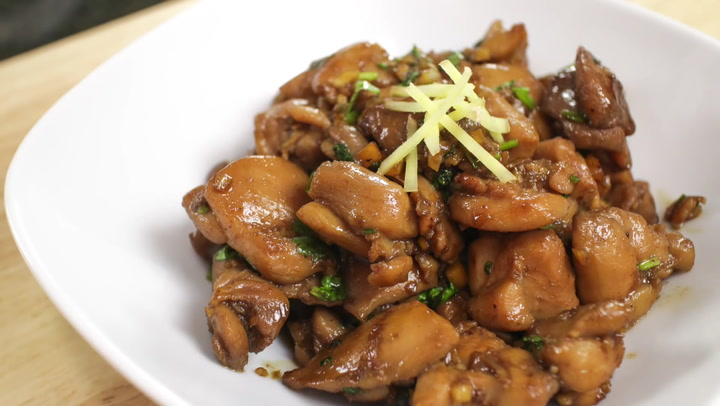

Ginger Soy Chicken

Description
An authentic thai recipe for ginger soy chicken.
Ingredients
- 500g chicken thigh, cut into 1.5” cubes
- 1.5 Tbsp soy sauce
- 1 Tbsp Golden Mountain sauce
- 2 tsp black soy sauce
- 4-5 cloves garlic, chopped
- 2 Tbsp chopped ginger
- 1.5 Tbsp palm sugar, finely chopped
- Jasmine rice for serving
Steps
- Marinade chicken in soy sauce, Golden Mountain sauce, and black soy sauce for 15-20 minutes.
- In a wok, sauté garlic and ginger in vegetable oil over medium high heat until garlic starts to turn golden.
- Add chicken and toss until the exterior looks done.
- Add palm sugar and pepper, then toss until sugar is dissolved and chicken is completely cooked.
- Serve with jasmine rice.